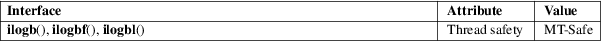

ilogb, ilogbf, ilogbl − get integer exponent of a floating-point value
Math library (libm, −lm)
#include <math.h>
int
ilogb(double x);
int ilogbf(float x);
int ilogbl(long double x);
Feature Test Macro Requirements for glibc (see feature_test_macros(7)):
ilogb():
_ISOC99_SOURCE || _POSIX_C_SOURCE >= 200112L
|| _XOPEN_SOURCE >= 500
|| /* Since glibc 2.19: */ _DEFAULT_SOURCE
|| /* glibc <= 2.19: */ _BSD_SOURCE || _SVID_SOURCE
ilogbf(),
ilogbl():
_ISOC99_SOURCE || _POSIX_C_SOURCE >= 200112L
|| /* Since glibc 2.19: */ _DEFAULT_SOURCE
|| /* glibc <= 2.19: */ _BSD_SOURCE || _SVID_SOURCE
These functions return the exponent part of their argument as a signed integer. When no error occurs, these functions are equivalent to the corresponding logb(3) functions, cast to int.
On success, these functions return the exponent of x, as a signed integer.
If x is zero, then a domain error occurs, and the functions return FP_ILOGB0.
If x is a NaN, then a domain error occurs, and the functions return FP_ILOGBNAN.
If x is negative infinity or positive infinity, then a domain error occurs, and the functions return INT_MAX.
See math_error(7) for information on how to determine whether an error has occurred when calling these functions.
The following
errors can occur:
Domain error: x is 0 or a NaN
An invalid floating-point exception (FE_INVALID) is raised, and errno is set to EDOM (but see BUGS).
Domain error: x is an infinity
An invalid floating-point exception (FE_INVALID) is raised, and errno is set to EDOM (but see BUGS).
For an explanation of the terms used in this section, see attributes(7).

C11, POSIX.1-2008.
C99, POSIX.1-2001.
Before glibc 2.16, the following bugs existed in the glibc implementation of these functions:
|
• |
The domain error case where x is 0 or a NaN did not cause errno to be set or (on some architectures) raise a floating-point exception. | ||
|
• |
The domain error case where x is an infinity did not cause errno to be set or raise a floating-point exception. |
log(3), logb(3), significand(3)